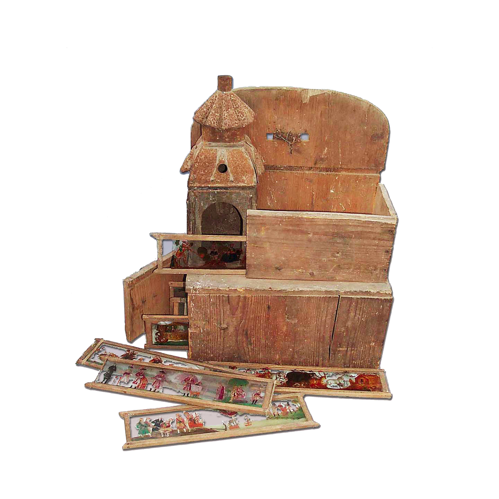

Les spectacles de curiosités ont longtemps fait partie du quotidien de nos ancêtres. Montreurs d’animaux, tours de physique et de mécanique, lanternes magiques, ventriloques, jongleurs et équilibristes sur pied ou à cheval, aérostats, marionnettes et cires sont, aux XVIIIe et XIXe siècles, l’âme de petits métiers ambulants qui animent les places publiques, les rues, les auberges, les cabarets, les loges des foires, les cirques naissants, voire les maisons particulières.
Ce projet a pour ambition de proposer aux chercheurs mais aussi au public large une approche prosopographique des montreurs de curiosités à travers les sources de police, les passeports, les registres de visa, les annonces et les affiches de plusieurs villes françaises.
Vous pouvez consulter sur ce site les notices des personnes, les lieux de passage de chacune d’entre elles et la liste des catégories professionnelles qui relèvent des « curiosités ». La base contient plus de 4500 notices de personnes et elle sera enrichie régulièrement par de nouvelles données.
Bonne découverte !
Les {{personnes|length}} dernières notices enregistrées :
année de naissance : {{personne.anneeNaissance}}
{% else %}année de naissance : non identifiée
{% endif %} {% if personne.lieux_naissance %}lieu de naissance : {{personne.lieux_naissance.nomLieuFr}}
{% else %}lieu de naissance : non identifé
{% endif %} voir notice